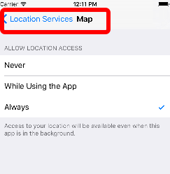
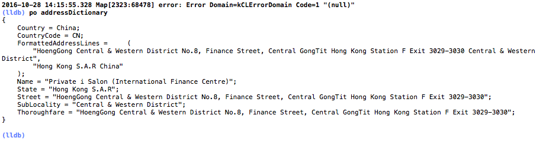

定位服务
分类
wifi
- 通过wifi路由器的地理位置查询，省电
蜂窝式基站
- 通过移动运营商基站定位，费流量
gps
- 通过gps卫星定位，准确，耗电量大，且不能遮挡
特点
- ios屏蔽底层细节，且根据设备情况，自动选择最佳解决方案：gps>wifi>蜂窝式基站
编程
core location框架
- CLLocationManager:用于定位服务管理类，提供位置信息和高度信息，可监控设备进入或离开某个区域，且可获得设备的运行方向
- CLLocationManagerDelegate:上述类的委托协议
CLLocation: 封装了位置和高度信息
代码
ViewController.h
#import <UIKit/UIKit.h>
#import <CoreLocation/CoreLocation.h>
#import <CoreLocation/CLLocationManagerDelegate.h>
@interface ViewController : UIViewController<CLLocationManagerDelegate>
/**
* 经度
*/
@property (weak, nonatomic) IBOutlet UITextField *txtLng;
/**
* 纬度
*/
@property (weak, nonatomic) IBOutlet UITextField *txtLat;
/**
* 高度
*/
@property (weak, nonatomic) IBOutlet UITextField *txtAlt;
@property (strong, nonatomic) CLLocationManager *locationManager;
@end
ViewController.m
#import "ViewController.h"
@interface ViewController ()
@end
@implementation ViewController
- (void)viewDidLoad {
[super viewDidLoad];
// Do any additional setup after loading the view, typically from a nib.
/**
* 初始化定位服务管理对象
*/
_locationManager = [[CLLocationManager alloc] init];
_locationManager.delegate = self;
/**
* 精确度：
* kCLLocationAccuracyBest：表示设备使用电池供电时最高的精度
*/
_locationManager.desiredAccuracy = kCLLocationAccuracyBest;
/**
* 距离过滤器：设备移动多少距离之后，才会获得位置信息
*/
_locationManager.distanceFilter = 1000.0f;
}
- (void)viewWillAppear:(BOOL)animated
{
[super viewWillAppear:animated];
/**
* 开始定位
*/
[_locationManager startUpdatingLocation];
}
- (void)viewDidDisappear:(BOOL)animated
{
[super viewDidDisappear:animated];
/**
* 停止定位
*/
[_locationManager stopUpdatingLocation];
}
/**
* 委托方法：定位成功
*/
- (void)locationManager:(CLLocationManager *)manager didUpdateLocations:(NSArray<CLLocation *> *)locations
{
/**
* locations是位置变化的集合，按照事件变化的顺序存放
*/
CLLocation *currLocation = [locations lastObject];
_txtLat.text = [NSString stringWithFormat:@"%3.5f",currLocation.coordinate.latitude];
_txtLng.text = [NSString stringWithFormat:@"%3.5f",currLocation.coordinate.longitude];
_txtAlt.text = [NSString stringWithFormat:@"%3.5f",currLocation.altitude];
}
/**
* 委托方法：定位失败
*/
- (void)locationManager:(CLLocationManager *)manager didFailWithError:(NSError *)error
{
NSLog(@"error: %@",error);
}
- (void)didReceiveMemoryWarning {
[super didReceiveMemoryWarning];
// Dispose of any resources that can be recreated.
}
@end
界面及结果
模拟器设置
- 首先在xcode的produce-》scheme-》edit scheme
打开定位服务

地理信息反编码
上图的结果，经度，纬度等是具体的数值，需要转化为文字描述
使用CLGeocoder实现
- (IBAction)click:(id)sender {
CLGeocoder *geocoder = [[CLGeocoder alloc] init];
[geocoder reverseGeocodeLocation:_currentLocation completionHandler:^(NSArray<CLPlacemark *> * _Nullable placemarks, NSError * _Nullable error) {
if([placemarks count] > 0)
{
CLPlacemark *placemark = placemarks[0];
NSDictionary *addressDictionary = placemark.addressDictionary;
NSString *address = [addressDictionary objectForKey:CNPostalAddressStreetKey];
address = address == nil ? @"":address;
NSString *state = [addressDictionary objectForKey:CNPostalAddressStateKey ];
state = state == nil ? @"":state;
NSString *city = [addressDictionary objectForKey:CNPostalAddressCityKey];
city = city == nil ? @"":city;
_showLabel.text = [NSString stringWithFormat:@"%@ \n %@ \n %@",state,address,city];
}
}];
}
其中获得的addressDictionary为
